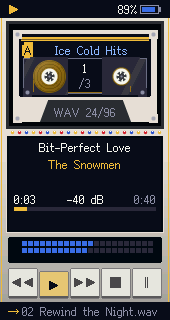
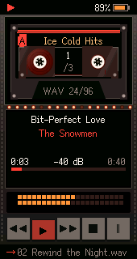
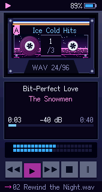
Portrait mode turns the play screen into a tape deck: your album on the cassette, live meters, and the buttons turn with it.
Elvis, Elvis '68, Chrome '84, EVA, Green Hill, Soundwave and more, in both orientations.
Bit-perfect lossless, DSD256, volume set in the DACs. Real meters from what you hear.
Presets plus custom, fully bypassed when off. Pair your headphones and go.
Drop the new firmware on the player and restart: it installs itself and tidies up.
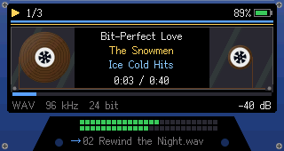
CLASSIC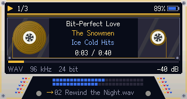
ELVIS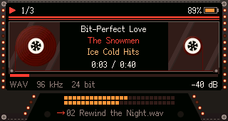
ELVIS '68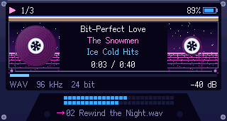
CHROME '84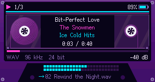
NEON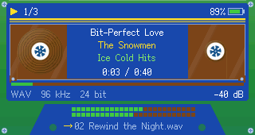
GREEN HILL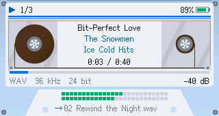
SNOW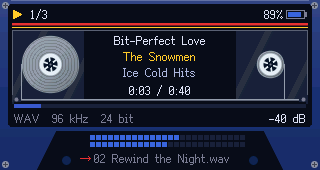
SOUNDWAVE